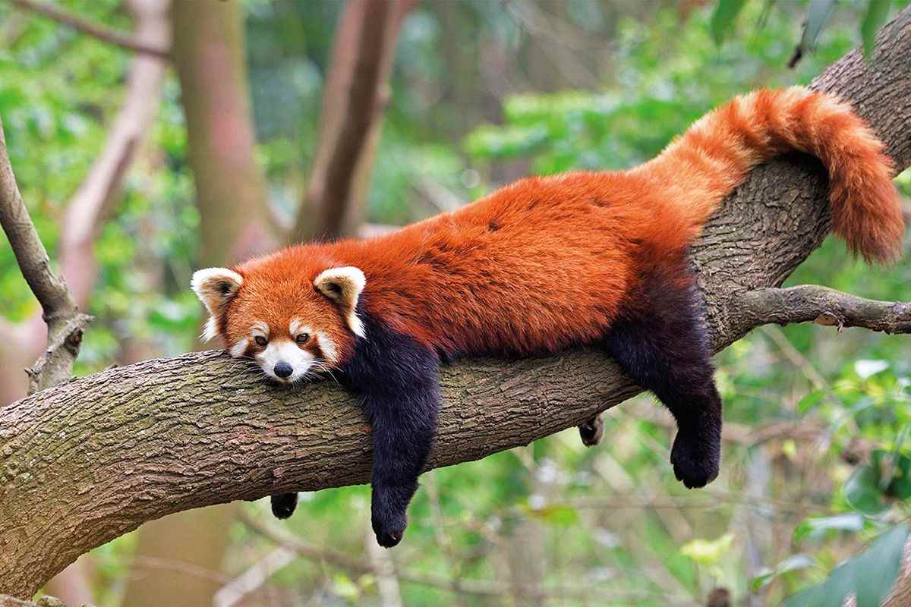

I'm Ally Currie.
I am a Visualization student at Texas A&M University
a focus in Interaction Design and a minor in Graphic Design.
Scroll down to see some of my previous projects!
Q&A
If you could domesticate any animal to have as a pet what would it be?
Mine would probably have to be a red panda! They've always been one of my favorite animals -- I think they look very sweet.

My favorite books:
- Lord of the Flies by William Golding
- The Seven Husbands of Evelyn Hugo by Taylor Jenkins Reid
- You by Caroline Kepnes
- Currently Reading: Hidden Bodies by Caroline Kepnes
My favorite destination so far has been Dublin, Ireland.
My favorite places to eat:
- Taqueria San Luis in Palestine, TX.
- Sweet Paris in College Station, TX.
- Gringos in College Station, TX.
- Raising Canes, for fast food.
"...And what is done in love is well done." - Van Gogh
View my Portfolio